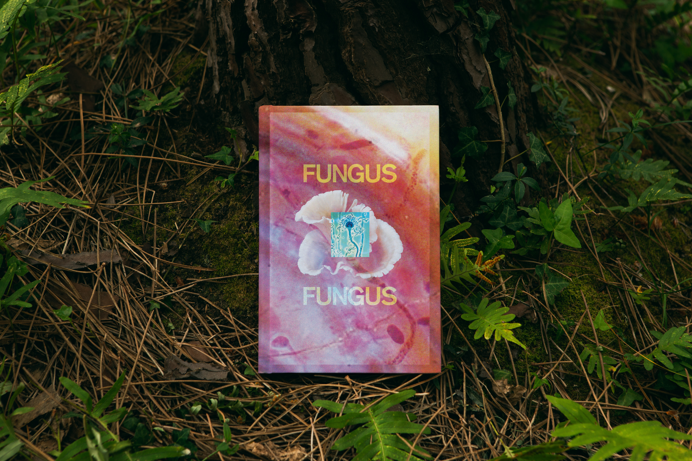
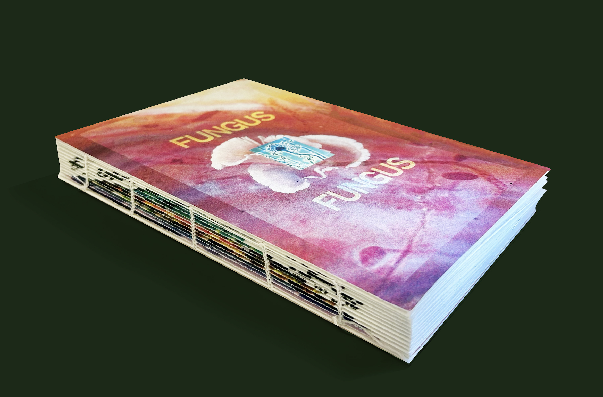

This book explores the visual and conceptual similarities between
nature and ballet,
pairing photographs of natural forms and movement
with captions drawn from Robert
Joffrey’s Principles of Repertory.
The captions provide a framework for reading these images through the principles of ballet, inviting the viewer to reconsider where choreography begins and how the structures we recognize exist both in nature and ballet.
Exploring Iris van Herpen’s work through the intersection of fashion & sustainability. This book & website acts as a physical and visual archive
of her runway looks, with each section focusing on a different aspect of
her practice.
This book invites readers to wander non-linearly, echoing the unpredictable rhythms of human bonds. Each page is a threshold, a point of entry into a story that stands on its own yet reaches outward, reminding us that every bridge and every connection belongs to a greater network of lives intertwined.
Exploring the concept of home through the park I grew up with. Each page captures a different moment of becoming lost in the surrounding landscape, drawing from personal memories and experiences. This book reflects how familiar spaces can hold memories and become deeply connected to our understanding of home.
A book transforming Wikapedia’s digital entry on Fungus into print. The images
function like the fungus itself—gradually growing in size and
spreading across the
pages. As they expand, they begin to overtake the space, forcing the text to shrink in
response. This visual tension mimics the behavior of fungus, consuming its environment
and reshaping the balance between image and type.
These posters interpret the lyrics of Lana Del Rey’s Video Games through typography. Using only the typeface Courier, each poster explores repetition and investigates how typography can be pushed to create new forms, rhythms, and a sense of movement. The designs translate the emotional qualities of the lyrics into a visual language through the manipulation, layering, and repetition of type.
This fully coded website reflects the idea that we are defined by the accumulation of memories we experience. Inspired by mosaics and collages, the designs represent the fragmented yet interconnected nature of memory, using thoughtful typography and composition to create a playful way of organizing and displaying the photos that shape my life.
An editorial exploration of fleeting moments, featuring curated text
excerpts set in my
custom Nouveau typeface.
A rebrand of America’s oldest mystery specialist bookstore, founded by
Otto
Penzler in 1979 and now located in Tribeca. The new identity reflects
its role as a hub
for mystery enthusiasts, bringing together books, readers, writers, and events through a
distinct, modern visual language.



